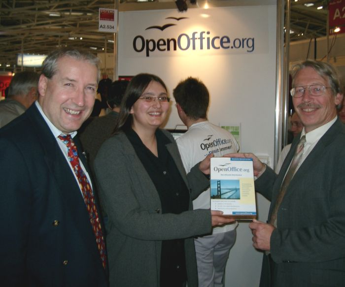

| Empfang |
|---|
| Startseite |
| Software |
| Produktinfo |
| Features |
| Download |
| CD-ROM bestellen |
| Rechtschreibprüfung |
| Dokumentation |
| Inhalt |
| Installationshandbuch |
| How-Tos |
| FAQs |
| Literatur |
| Support |
| Hilfe per Mail |
| Foren (extern) |
| Professioneller Support |
| Marketing |
| Marketing-Material |
| Veranstaltungen |
| Presse-Infos |
| Presse-FAQ |
| Über das Projekt |
| Geschichte |
| Meilensteine |
| Unterprojekte |
| Incubator |
| Whitepapers |
| Sponsoren |
| Mithelfen |
| ... aber wie? |
| Zuwendungen |
| Ansprechpartner |
| Sonstiges |
| Bildungsportal |
| Danksagungen |
| Links |
| Unsere Seiten linken |
| Rechtliches |
| Infos für Helfer |
Systems 2004 in München
OpenOffice.org mit eigenem Stand vertreten. Starke Nachfrage nach PrOOo-Box und Migration in KMUs und der Verwaltung
Vom 18. bis zum 22. Oktober 2004 fand in München die Systems 2004 statt, auf der OpenOffice.org zusammen mit anderen wichtigen Open Source-Projekten in einem kleinen Pavillion in Halle A2 mit einem eigenen Stand vertreten war. Verantwortlich für den Stand zeichneten diesmal (in alphabetischer Reihenfolge) Florian Effenberger, Eric Hoch, Ludwig Högner, Thomas Krumbein, Christian Lohmaier, Bernd Obermayr, Tobias Paukert, Jacqueline Rahemipour und Andreas Wenz.
Insbesondere die PrOOo-Box stieß auf starke Nachfrage, sowohl bei Heimanwendern, als auch bei kleinen und mittelständischen Unternehmen (KMUs) sowie der Verwaltung. Hauptthemen diesmal waren die Migration auf OpenOffice.org sowie die Features der im nächsten Jahr kommenden Version 2.0.
Herzlich bedanken möchten wir uns bei allen Spendern, Unterstützern und Sponsoren, allen voran Frau Acher von der Messe München für die Möglichkeit, uns auf der Messe zu präsentieren, Thomas Templin und der Firma Shuttle für die Hardware-Leihgabe, den Firmen mediabit und X-Net sowie Frau Riebl vom Verlag C&L für die Koordination.
Bilder gibt es auf den Dateiseiten des Projektes.
Symbolische Übergabe an die Stadt München
Herr Wilhelm Hoegner, Leiter des Amtes für Informations- und Datenverarbeitung (AfID) der Stadt München, konnte sich am Messestand auf der Systems aus erster Hand über den Entwickungsstand von OpenOffice.org informieren. Die Projektmitglieder gaben Auskunft über die aktuelle Version 1.1.3 und die geplanten zukünftigen Entwicklungen des freien Office-Pakets. Die Vorstandsmitglieder Jacqueline Rahemipour und Thomas Krumbein des frisch gegründeten Vereins "OpenOffice.org Deutschland e.V." übergaben Herrn Hoegner symbolisch eine OpenOffice.org PrOOo-Box und wünschen im Namen des gesamten Teams der Stadt München zur geplanten Migration zu Linux viel Erfolg.
